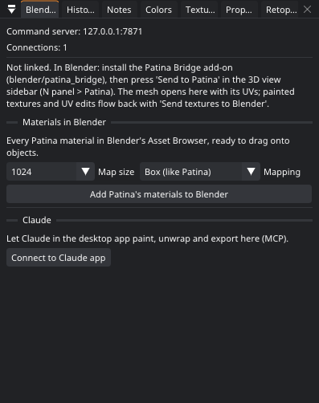
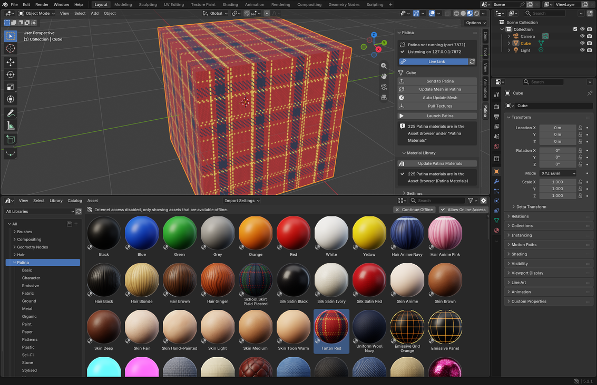

The Blender bridge
You model in Blender and paint in Patina. With the bridge, the textures appear on the Blender model by themselves, and UV changes made in Patina go back too.
Setting up
- Install
patina_bridge.zipin Blender (see Install). - Open the 3D view sidebar (N) and find the Patina tab.
- Click Launch Patina, or start Patina yourself. The add-on finds it on port 7860.
If Blender can't find the program, set Patina Executable in the add-on preferences to the full path, for example
/home/you/.local/bin/patina or C:\Users\you\AppData\Local\Programs\Patina\patina.exe.
The round trip
- Send to Patina with a mesh selected. Patina opens it with the exact face-corner order, UVs and seams. If its materials show textures or colors, Patina starts from them, as the layer From the model (add-on 0.13). A color attribute (vertex paint, add-on 0.10) comes in too, where a slot has no image on Base Color. One that is a single flat color is skipped, unless a material shows it. If you painted the object before and saved the project, Patina opens that project instead (see After a restart).
- Paint. Press Ctrl+B in Patina, use Blender › Send Textures to Blender, or turn on Auto-Send After Changes to keep Blender up to date as you paint.
- Blender reloads the images
Patina_<object>_<map>and builds or updates a materialPatina_<object>. It contains a Principled BSDF with base color, roughness, metallic, normal, emission and AO, and optionally displacement. Base color and emission are sRGB; everything else is Non-Color. - Keep modeling in Blender, then click Update Mesh in Patina. Patina keeps your layers. If only the UVs changed, the paint is moved to the new UVs. If the topology changed (added loops, extrusions, sculpting), the paint is transferred through 3D onto the nearest point of the new surface.

Several objects
Select several meshes in Blender (a character's body, clothes, eyes and hair) and press Send to Patina. The
active one starts the scene and the others come in beside it, each an object with its own layers (Patina 1.2 and the
add-on 0.14). Add to the Patina Scene adds the selected meshes to what Patina has open. Each comes in where
Blender has it (its matrix_world), and its sculpt face sets come along as face sets.
An update goes to its own object, and the one you paint stays the one painted. Send Textures to Blender sends every linked object's textures. Auto Update Mesh only updates the objects Patina's scene has: an object you removed from the scene stays out. See Scenes.
Auto Update Mesh
Turn on Auto Update Mesh under Update Mesh in Patina and you don't have to click it any more: after you change a mesh that was sent to Patina (modeling, sculpting, UV edits in Blender), the add-on sends it again by itself once you pause for the Settle Time (1.5 s by default; sculpting waits three times as long). Patina keeps the layers and moves the paint, as with the button. Only objects already sent are watched, nothing is sent while Patina is still busy with the last one, and UVs that Patina sends back don't trigger a send of their own. It is off by default; the setting is also in the add-on preferences.
After a restart
Your layers live in Patina's project, not in Blender. Blender only gets the finished textures. So save the project (Ctrl+S) after you paint.
When Blender sends an object that Patina doesn't have open, for example after you closed or restarted Patina, Patina looks for the project it was painted in (0.44). That is the last project saved or opened for that object, or a project in your recent files that is linked to it. Patina opens it and keeps its layers. If the mesh changed since, the paint moves across, as with Update Mesh in Patina. The status bar names the project it opened.
Patina leaves a project alone when the object is another model with the same name: other faces, in another place, at another size. It also starts a new project when you send with Keep Layers off. The switch is Blender: reopen an object's project in Preferences › Features.
With no saved project, the object starts from what its Blender materials show (add-on 0.13). For each material slot, Patina reads the Principled BSDF's colors and values and the images behind Base Color, Roughness, Metallic, Normal (through a Normal Map or Bump node), Emission, Alpha, Coat and Sheen. They come in as the layer From the model. After a push, those images are Patina's own textures, so the look comes back as one layer. Patina skips images that exist only in Blender (packed or generated) and UDIM images. Save them to files first. The switch is Blender: start from Blender's materials.
Select Asymmetric Vertices
With a mesh sent to Patina, Select Asymmetric Vertices runs Patina's symmetry check and selects the vertices whose mirror image misses the other side by more than the tolerance (and those with no other side at all), in Object or Edit Mode. The Patina panel shows the verdict and the worst distance. Fix them with Blender's own tools (Symmetrize, snapping, the shape key and weight tools) so the rig and shape keys stay in step, then Update Mesh in Patina and check again.
Texture sets and UDIM tiles
The add-on sends the names of the object's material slots, and Patina names its
texture sets after them. When Patina paints a texture set per material slot,
Blender gets a material per slot, Patina_<object>_<set>, each with its own images, and each slot
shows its own material. With UDIM tiles, every map becomes one tiled image (Blender's UDIM images) that reads
Patina_<object>_basecolor.<UDIM>.png and so on, with a tile for each of Patina's tiles. The
replaced materials are kept, and Restore Materials puts them back, as with a single texture set.
Opacity, sheen, clearcoat and subsurface
When the texture set uses them (see Materials), Patina sends their maps too, and the add-on (0.8) connects them to the Principled BSDF's Alpha, Sheen Weight, Coat Weight and Subsurface Weight. With an opacity map the material is set to Dithered, which shows lace and cut-outs without sorting problems. When the texture set stops using them, the links go again.
UV edits go back
If you unwrap or move UVs in Patina, the next export also sends the UVs and seams. Blender writes them into the active UV map, through BMesh if the object is in Edit Mode, so you don't have to leave it. Blender does this only when the mesh still has the same face corners as the one that was sent.
Retopology goes back as a new object
With a linked object, Retopology › Send the Quads to Blender (or Send to Blender in the Retopology window) adds the quads made over it as a new object, name_retopo, in the same collections and the same place. Sending again replaces its mesh, so you can repaint the patches in Patina and send once more. This needs the 0.7 add-on. See Retopology.
Patina's materials in Blender
All of Patina's materials can sit in Blender's Asset Browser, ready to drag onto any object. In Blender, open the Material Library part of the Patina tab and click Add Patina Materials to Blender (or, in Patina, the Add Patina's materials to Blender button in the Blender Link window). Choose:
- Map size: 512, 1024 or 2048 pixels. 1024 needs about 300 MB for all of them.
- Mapping: Box (like Patina) projects the material from the sides, top and front, as Patina does, so it needs no UVs and is the same size on every object (the Scale node is in tiles per meter). UV follows the object's UV map and uses Patina's normal maps.
- Materials: Patina's own, or Patina's and yours (the materials you made in Patina's material editor or from your images).
Patina bakes every material (a hidden Patina does it when Patina isn't running), and Blender builds the library in
the background, which takes about a minute. It goes into Documents/Patina Materials (change it with
Material Library Folder in the add-on's preferences) and is added to Preferences › File Paths › Asset
Libraries as Patina Materials. In the Asset Browser the materials are in Patina's categories, with
Patina's previews, under Patina; yours are under Patina › My materials.
Patina's materials are procedural, and Blender can't run Patina's generators, so in Blender each material is a Principled BSDF over the maps Patina baked: color, roughness and metallic, height (as a bump, for box mapping) or the normal map (for UV mapping), glow, and the opacity of see-through materials (lace, nets, leaf and hair cards). Sheen, clearcoat and subsurface become the Principled BSDF's values. Click the button again whenever you want the library brought up to date, for example after making new materials. Materials you already used in a file use the same map files, so they update too.

The model back to Blender
Blender › Send Model to Blender as a New Object sends the model as it is in Patina (mended in the Mesh Check, say) to Blender as a new object with its textures, and Patina links to it. See Sending the model to Blender. This needs the 0.9 add-on.
Without the add-on
If you prefer exporting files, Patina still keeps up with Blender: export the model as .glb or
.obj, open it in Patina, and when you export over the same file after a change in Blender, Patina offers to
update the mesh with your layers kept (see Projects). For game assets, export the
sculpt from the same scene and bake it with Bake › From a High-poly Mesh
(high-poly baking). Material slots come along in both cases.
Gotchas
Patina_… material replaces the material in each of the object's slots (with a texture set
per slot, each slot gets its own). Faces keep their
slot assignments. The old materials stay in the file, and Restore Materials in the Patina panel puts them back.
With Show on Every Slot off in the add-on's settings, the material is added as a new slot instead, and you assign
faces to it yourself. (Until Patina 0.8.1 this was the only behavior: on a character with its own skin material, the
old texture then showed through Patina's new UVs.)[Patina]. Start Blender from a terminal (on Windows, Window › Toggle System
Console) to read them.